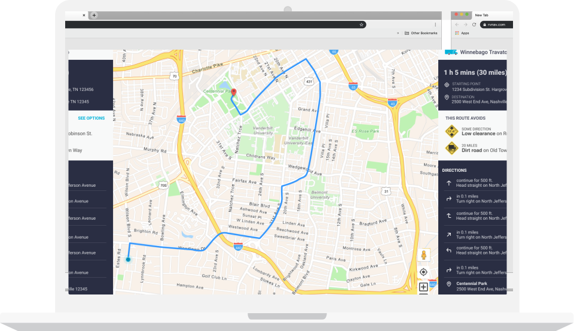

I am open to talk about UX or anything under the sun.
Let's Connect!
joanne.berina@hotmail.com

I solve problems using a Design Thinking and a User-Centric approach. I enjoy collaborating with my team, validating and iterating ideas.
I am open to talk about UX or anything under the sun.
joanne.berina@hotmail.com